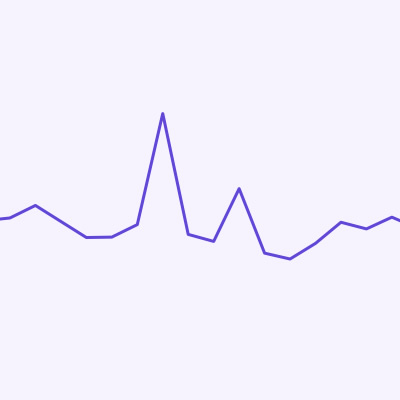

An artist of considerable range, Jane Faker — the name taken by Melbourne-raised, Brooklyn-based Nick Murphy — writes, performs and records all of his own music, giving it a warm, intimate feel with a solid groove structure.
Settings
One Push Website Build Serve static websites with dynamic features.

Up and Running Analytics Front and back end Analyatics.
Measure visitors to your app from their first visit and beyond sign up.